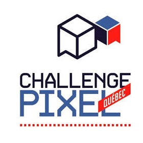

About

Who is Patrice?
Patrice is a Software Engineering student at ÉTS (École de Technologie Supérieure) in Montreal. He likes all kind of programming, but he's more interested in interactive fields like:
- Video Games Development
- Virtual & Augmented Reality
- Artificial Intelligence
- Computer Vision
Notable Experiences
-

March 2016
Ubisoft Montreal Game Lab Competition 2016
From January 2016 to March 2016, I took part with 7 other students in the Ubisoft Game Lab Competition where we had to make a game in 10 weeks while still being full time students. The objective of the contest was to create a game with the theme ‘Ocean’, 2 systems and 3 mechanics that interact which each other, as well as physics, AI, checkpoints and at least 10 minutes of gameplay. So we created Astral Tides, a game that won Best Art Direction and got nominated in 6 out of 8 categories. We decided to continue the development of the game and turn it into a full game.
-

September 2015
Autodesk
In September 2015, I did my second internship at Autodesk where I worked on Project Expo using the newly released Stingray Engine. Even though Project Expo is a 3D visualization tool for architects and not technically a game, we got to use the same techniques.
-

March 2015
Pixel Challenge Quebec
In March 2015, 4 developers and I went to the Pixel Challenge 2015 in order to compete in the Amateur/Student competition, where we got the second place award with À Bout de Souffle. The theme was L'alliance des forces. This was my first game jam, and it probably ignited my love for those events.
-

September 2014
Behaviour Interactive
In 2014, I got my first internship at a video games development company: Behaviour Interactive. I had the chance to work on the game Home: Boov Pop for about 7 months while using the Unity Engine.